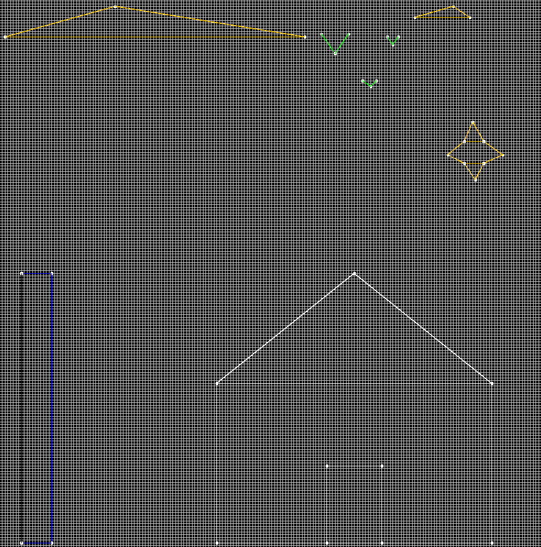
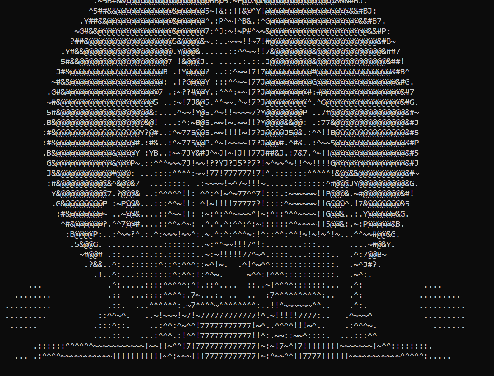

Abdel-Ghani Ghlamallah,
Programmeur génial

Java est un langage de programmation polyvalent et populaire utilisé dans de nombreux domaines, de l'application de bureau à la création d'applications mobiles et de serveurs. Il est apprécié pour sa portabilité, sa robustesse et sa sécurité, ce qui en fait l'un des langages les plus utilisés dans le monde du développement logiciel. Java est utilisé dans de nombreux domaines. Par exemple, il est couramment utilisé pour développer des applications de bureau, en particulier dans l'environnement d'exécution JavaFX, qui permet de créer des interfaces graphiques modernes et interactives. De plus, Java est également utilisé pour le développement d'applications Android, ce qui en fait l'un des langages principaux pour la création d'applications mobiles.
Cliquez pour accéder au projet
Description:
L'Ardoise magique est un projet etudiant qui a pour but l'étude de l'héritage et l'utilisation d'une librairie externe. C'est un script simple qui permet l'affichage d'une fenêtre avec des illustrations simples, statiques ou mouvantes.
Bilan:
Rien de nouveau, l'utilsation des classes et des libraires est maîtrisée. Même si le sujet est l'implémentation d'un image prédéfinie, il est possible de faire évoluer ce principe en utilisant les classes ce projet comme base pour créer une ardoise modifiable par l'utilisateur.
Image:
Description:
JavaVania est un projet personnel sur lequel j'ai travaillé dans le but d'étudier le Java de façon plus ludique. Mon but était de créer un jeu-vidéo en utilisant exclusivement le terminal et ce sans aucune librairie externe. C'est un RPG old-school de type "Dunegon Crawler" qui se joue exclusivement sur le terminal de façon semi-automatique. Les graphismes sont générés par l'IA StableDiffusion avant d'être transformés en chaîne de caractère puis affichés
Bilan:
Le projet JavaVania n'est pas achevé puisque je n'en ai plus l'utilité. Cependant il reste jouable et même si ce n'est pas très amusant, il reste assez appréciable d'un point de vue strictement graphique. Il manque seulement quelques fonctionalités au jeu : le commerce, les scenes, l'équilibrage et le remplissage. Le principal défaut du code est sa lisibilité qui est affectée par les longues chaînes de caractères qui composent les graphismes.
Image:

Contactez-moi sur les réseaux suivants :


abdel-ghani.ghlamallah@edu.univ-paris13.fr
Section Image